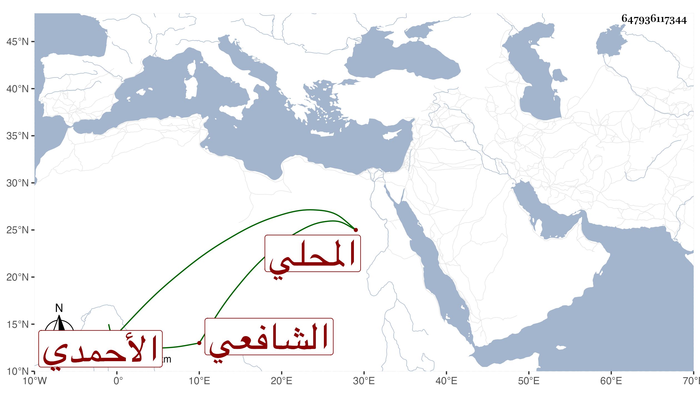

0902Sakhawi.DawLamic.ITO20230111-ara1.EIS1600.647936117344
Biography ID: 647936117344
917
عبد اللطيف بن علي المحلي البلتاجي الأحمدي الشافعي أخذ عن أبيه وحج وجاور سنة أربع وثمانمائة ، وسمع من إبراهيم الزهراني شيئا من مناقب سيدي أحمد ، وكان يحفظ كثيرا من مناقبه وأحواله أخذ عنه ابن المنير ، وقال انه مات بعد سنة إحدى وثلاثين .
